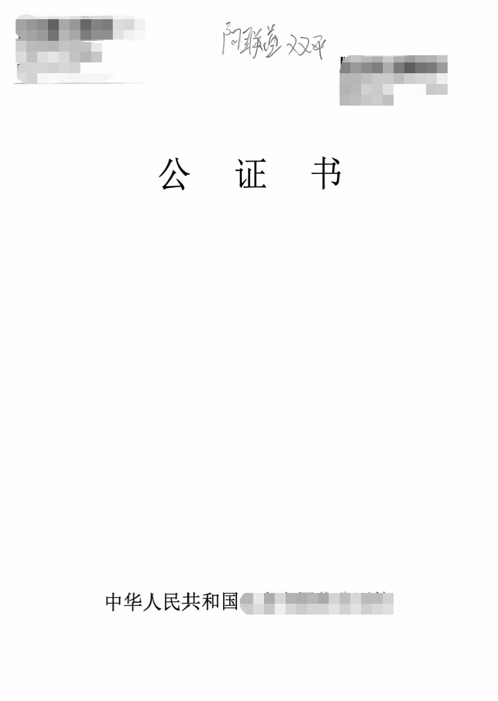
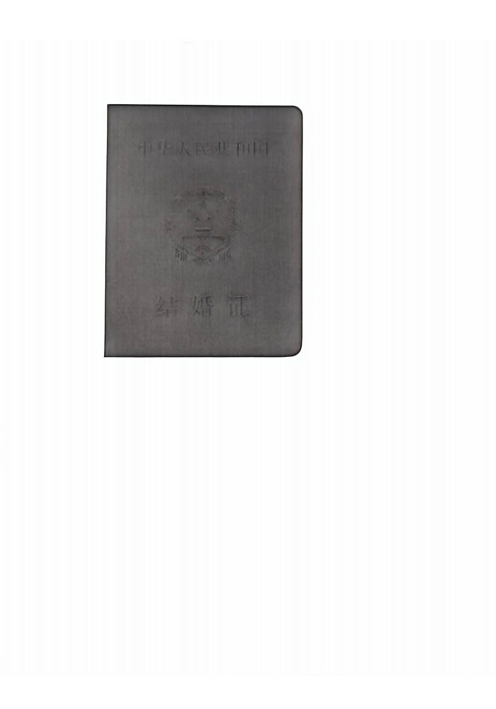
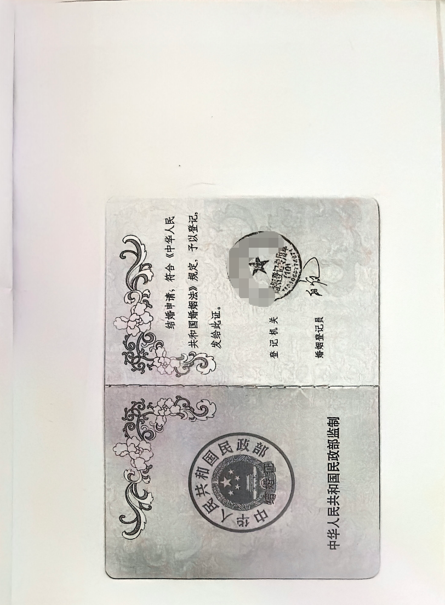
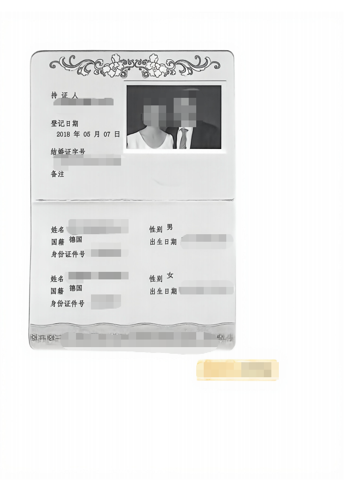
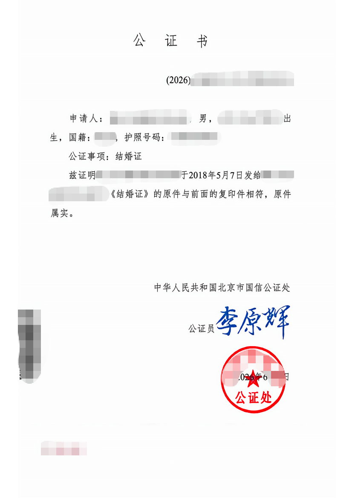
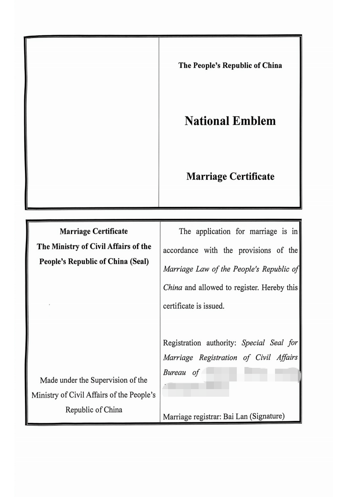
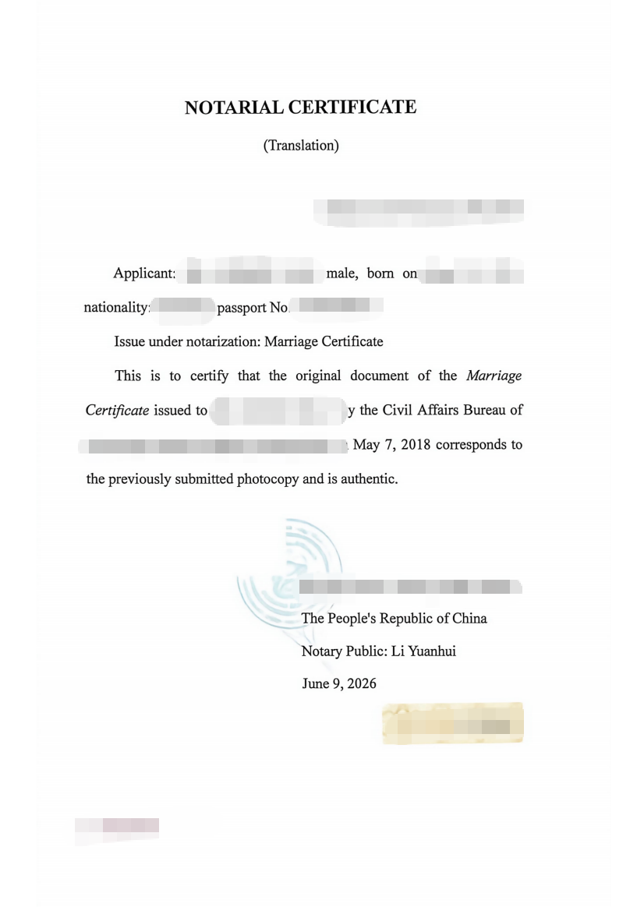
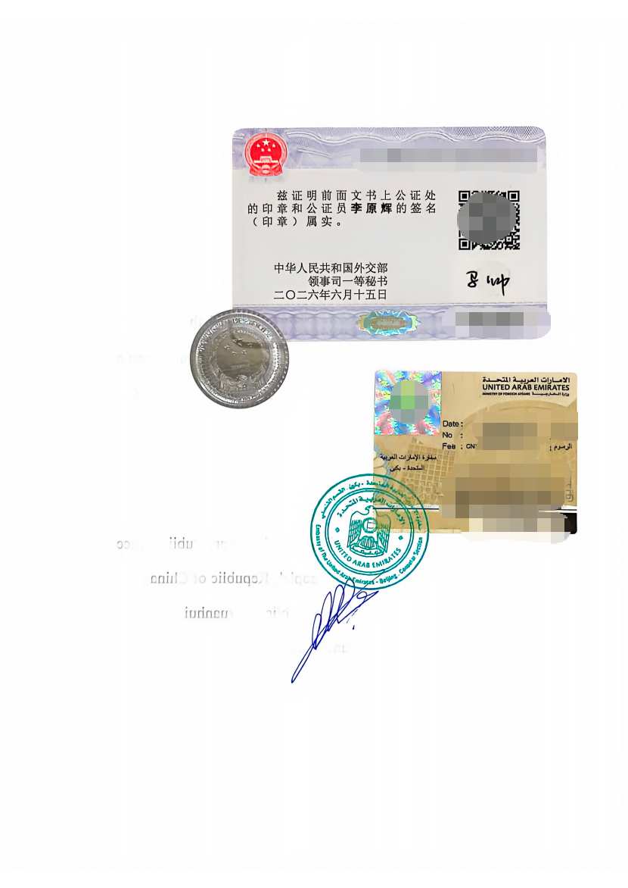

What Does a China Embassy Authentication Document Look Like?
This page displays embassy authentication and embassy legalization samples, including underlying document pages, notarial pages, translations, authentication stickers, signatures, stamps and seals. For the complete route and terminology, read the China Embassy Legalization Guide.
What is shown here?
The gallery uses a redacted marriage-document bundle and a UAE consular authentication example to illustrate how several document and authentication stages may appear together.
What This Sample Set Shows
Underlying document
The marriage certificate cover, inside page and holder-information page show the civil document before later authentication marks are reviewed.
Notarial stage
The notarial cover and Chinese notarial page illustrate a typical notarized document bundle and the placement of a notarial seal and signature.
Translation pages
The English pages show how translated content may be included. Translation is a separate element and should be checked against the source document.
Authentication marks
The final sample illustrates stickers, seals, dates and signatures associated with later authentication and consular stages.
China Embassy Authentication Sample Gallery
The sample set below shows different parts of one redacted document bundle. Each image represents a document or authentication stage; seals and signatures may appear in different locations in other cases.
Notarial Cover Sample

Marriage Certificate Cover Sample

Marriage Certificate Inside Sample

Holder Information Sample

Chinese Notarial Certificate Sample

English Translation Sample

English Notarial Certificate Sample

UAE Authentication Sticker and Stamp Sample

How to Read an Embassy Authentication Document
- Identify the document. Confirm the document description and that every attached page belongs to the same bundle.
- Check official marks. Review seals, stamps, stickers and signatures without assuming that every document uses the same layout.
- Compare key details. Check dates, certificate or reference numbers, names, stated country and the authority shown at each stage.
- Keep the chain together. Do not detach pages, seals or stickers, and use only official verification instructions or QR-code channels shown by the issuing authority.
For broader information about document routes and preparation, see the Document Legalization Guide.
Notarization, Authentication and Embassy Legalization
Notarization
A notarial page may certify a document, copy, signature or translation. It is an earlier stage and is not the same as embassy legalization.
Authentication
An authentication mark generally confirms the preceding official signature, seal or authority in the document chain.
Embassy legalization
An embassy or consulate may add a sticker, stamp, seal, signature or attached certificate for use in the destination country.
Complete document chain
Review the attached pages together. A seal or sticker should be connected to the correct document rather than assessed in isolation.
Embassy Authentication vs Apostille
Embassy authentication
This route is generally used when the destination or receiving authority requires consular legalization. It may include several attached authentication stages.
Apostille
An apostille is used in applicable cases for countries that accept apostilles. Read the China Apostille Guide and compare certificate formats in the China Apostille Samples.
Related Resources
Use the guide and sample pages that match the document and destination. For education records that may need preliminary preparation, see the Degree Certification Guide.
Frequently Asked Questions
What is embassy authentication?
Embassy authentication, often called embassy or consular legalization in this context, is a stage used to prepare an authenticated document for use in a destination country. It may follow notarization and another government authentication step. The embassy or consulate generally confirms the preceding seal or signature in the chain; it does not verify every factual statement in the underlying document.
What does an embassy authentication document look like?
Appearance varies. A document bundle may include a notarial certificate, translation pages, authentication stickers, official seals, signatures, dates or an attached legalization certificate. Some marks appear on a separate page while others are placed directly on the authenticated document. This page uses real redacted examples, but no single layout should be treated as universal.
Can different embassies issue different legalization certificates?
Yes. Different embassies and consulates may use different stickers, stamps, languages, certificate numbers, signatures or page layouts. The format may also change by document type, date and authentication route. Review the complete document chain and compare it with the receiving authority's instructions rather than expecting every legalization certificate to match one sample.
Is embassy authentication the same as apostille?
No. Embassy authentication or legalization is generally used when a consular route is required, while an apostille is used in applicable cases under the Hague Apostille Convention. They are different authentication methods and should not be substituted without confirming the receiving authority's requirements. Either route may still involve notarization, translation or supporting documents.
How can I verify an embassy authentication document?
Check visible seals, signatures, dates, certificate or reference numbers, the document description, stated country and issuing authority. Make sure attached pages and stickers remain connected to the correct document and personal details agree throughout. If a QR code or official verification instruction is present, use only the official channel identified by the issuing authority; online verification is not available for every document.
Do all legalized documents have identical seals?
No. Seals can differ by notary, authentication authority, embassy or consulate, destination, date and document type. A legalized bundle may contain several seals representing separate stages, and some stages may use stickers or attached certificates instead. Focus on whether each mark belongs to the correct document chain, not whether it looks identical to another sample.
Sample Reference Note
Need help reviewing the document route?
Confirm the destination, document type and receiving authority instructions before relying on a sample format.
Contact Global Attest